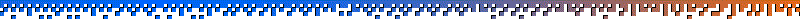

Habitat, the first ever graphical massively multiplayer online game, emerged on the Commodore 64 home micro computer in 1986. Because the game was the first of its kind, its developers tried a number of odd experiments that would never be repeated in the online games of today. The game shut down after only two years, but it survived for a time in the offshoot game Club Caribe.
In 2017, the Museum of Art and Digital Entertainment partnered with a few of Habitat’s original creators to bring the game back to life, 30 years after its demise. It was completely unprecedented for a museum to revive an online game and make its servers publicly accessible. The MADE argued in front of US copyright courts, and were able to secure an exemption to the Digital Millennium Copyright Act that makes projects like this far more viable going forward.
Today, the revived Habitat (referred to as NeoHabitat) can be played in a web browser for free, and anyone can easily log on and socialize in this time capsule of the late-80’s. We spoke with Steve Salevan, one of the main software developers on the project, to learn about Habitat’s history, and how its revival was accomplished.
Resources
- NeoHabitat is freely accessible via your web browser, or using a C64 emulator. Both methods work well, but we recommend the browser experience because it also includes the "Docent", a very impressive tool that sits to the right side of the screen and contextually updates to give you interesting historical information and helpful navigation tips about the various areas you can visit in the game.
- It's easy to get lost in the world of NeoHabitat, so these maps can really come in handy.
- NeoHabitat's developers run a Slack channel where you can talk about the game, get help with any technical issues you may face, or volunteer to help out with the project.
- In 1990, Chip Morningstar and Randall Farmer, two of Habitat's original creators, presented a white paper called "The Lessons of Lucasfilm's Habitat". This paper can be read in full online, and it provides a lot of historical information about NeoHabitat, as well as insights into its player culture back in the 80's. It also gives you a sense of how the creators of the first graphical MMO were thinking about the medium at that time.
- The Museum of Art and Digital Entertainment was instrumental in the NeoHabitat project, and they currently host the game's servers. They also host a cool podcast on video game history. The MADE recently lost their building due to financial struggles caused by the COVID-19 pandemic, and they are seeking donations to help them return in full force soon.
Music from this Episode
Because Habitat did not have background music beyond the startup/loading jingle, for this episode we used two ambient pieces by the band 8 Bit Weapon. Both pieces were created using the Commodore 64's SID sound chip.
- "Phase I Lexical Analysis" from the album "Disassembly Language: Ambient Music for Deprogramming Vol. 1" (2016)
- "Defragment" from the album "Disassembly Language: Ambient Music for Deprogramming Vol. 2" (2019)